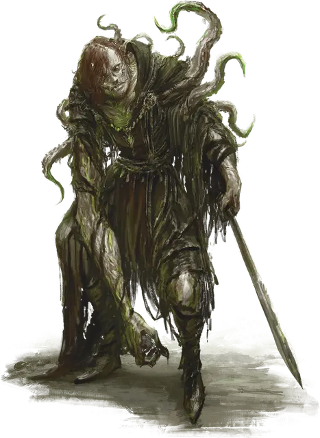

Аберрантный зилот
Aberrant Zealot
Средняя Аберрация, хаотично-злая

Класс Доспеха 16 (проклёпанный кожаный доспех)
Хиты 93 (17к8 + 17)
Скорость 30 футов
| мод | спас | ||
|---|---|---|---|
| СИЛ | 15 | +2 | +2 |
| ЛОВ | 18 | +4 | +7 |
| ТЕЛ | 12 | +1 | +1 |
| мод | спас | ||
|---|---|---|---|
| ИНТ | 13 | +1 | +1 |
| МДР | 8 | −1 | −1 |
| ХАР | 19 | +4 | +7 |
Навыки Восприятие +5
Сопротивление урону психическая энергия
Иммунитет к состояниям захват, испуг, опутанность, ослепление, очарование
Чувства истинное зрение 10 футов, тёмное зрение 60 футов, пассивное Восприятие 15
Языки Общий, Глубинная речь
Опасность 8 (3900 опыта)
Бонус мастерства +3
Особенности
Аберрантная форма. Зилот излучает хаос Дальнего предела. Любое существо, не являющееся Аберрацией, которое начинает свой ход в пределах 5 футов от зилота, должно преуспеть в спасброске Мудрости Сл 15, иначе оно получит 7 (2к6) психического урона.
Странно податливый. Зилот, как и любое снаряжение, которое он носит или несёт, неестественно гибок. Зилот может пройти через любое пространство шириной до 1 дюйма, не сжимаясь.
Действия
Мультиатака. Зилот совершает одну атаку Психическим разрыванием и две атаки коротким мечом.
Психическое разрывание. Рукопашная или дальнобойная атака заклинанием: +7 к попаданию, досягаемость 15 футов или дистанция 120 футов, одна цель. Попадание: 14 (3к6 + 4) психического урона и цель должна преуспеть в спасброске Мудрости Сл 15, иначе она будет ошеломлена до начала следующего хода зилота.
Короткий меч. Рукопашная атака оружием: +7 к попаданию, досягаемость 15 футов, одна цель. Попадание: 7 (1к6 + 4) колющего урона плюс 7 (2к6) психического урона.
Использование заклинаний (псионика). Базовой характеристикой зилота является Харизма. Он может накладывать следующие заклинания, не нуждаясь ни в каких компонентах:
• Неограничено: обнаружение мыслей [detect thoughts], малая иллюзия [minor illusion]
• 1/день каждое: магические врата [arcane gate], голод Хадара [hunger of Hadar]
Бонусные действия
Пустотное искажение (перезарядка 5–6). Зилот телепортируется вместе со всем снаряжением, которое он носит или несёт, в незанятое пространство, которое он может видеть в пределах 120 футов от себя, оставляя бурлящую пустоту в пространстве, которое он покинул. Сразу после телепортации каждое существо в пределах 30 футов от пустоты, кроме зилота, должно совершить спасбросок Силы Сл 15. При провале существо получает 18 (4к8) урона силовым полем и притягивается к незанятому пространству, ближайшему к пустоте. В случае успеха существо получает вдвое меньше урона. Затем пустота исчезает.
Описание
Аберрантные зилоты — культисты, которые обратились к силам Дальнего предела только для того, чтобы что-то вернуть. Пропитанные странной энергией, аберрантные зилоты заимствуют свою порочную мощь у чудовищных существ, населяющих этот мрачный мир.